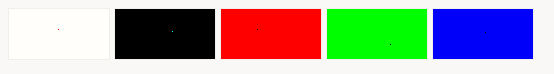

Dead-pixel check

Clean the screen gently with a soft cloth and click “Start test”.
Press “F11” key if your browser window doesn't switch to full screen automatically.
Press “Esc” key to exit fullscreen mode and to stop test and return to this page.
Click left mouse button or press “space” to change test-screen.
Pixels are very small so you have to look carefully all test screens.
Let your eyes accommodate to screen brightness.
Start test
|